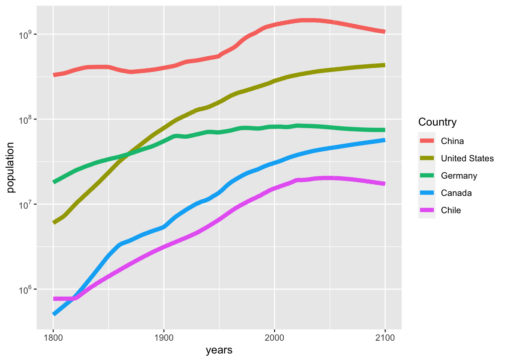

Data are available from a huge number of sites on the internet run by governments, NGOs, companies, industry associations, research projects, and individuals. These data come in a variety of formats and while many will be easy to read with R, some will be quite challenging. In this lesson I will introduce you to some sources of data. Partly this is to help you start to learn how to navigate a variety of data sources, but of course part of the reason is to get you thinking about data you might use in your project.
20.1 Finding data
20.1.1 Data in R packages
Many datasets are available as part of R packages. These are the easiest to use, but they are often small and designed for demonstration purposes. For example, the gapminder package only contains a small portion of the data available on the gapminder website.
These are the go-to datasets that we have used for demonstrating many simple visualizations:
mtcars and many other well-known data in datasets package
penguins in palmerpenguins package
gapminder in gapminder package (but see website too Gapminder)
diamonds, mpg, economics, midwest, msleep in ggplot2 package
nycflights13 in dbplyr package
gss_sm, gss_cat, gss_sib, gss_lon and gss_lon in socviz package
20.1.2 Tidy Tuesday
Tidy Tuesday is a project to encourage people to develop skills at data visualization and analysis using the tidyverse packages in R. Each week a new data set is posted and participants experiment to create new visualizations. Some people share their work on GitHub and social media.
The Tidy Tuesday website describes the project and has a catalog of available datasets from previous weeks.
The R package to access the data is called tidytuesdayR. Examples of using the package are here
20.1.3 R packages for accessing data
There are many packages designed primarily to provide access to large collections of data. Here are a few examples.
cancensus for data from the Canadian census and National household survey. You need to create an account and get an API key to use this package. The package documentation shows you how.
20.1.4 Websites with data collections
Naturally there are websites that curate lists of data available from other sites. Here are a few I’ve found useful.
Our World In Data is a curated set of over 3000 charts with documentation and open source data.
The awesome public datasets project collects high quality public data, organized thematically.
This is one person’s collection of data of various sources
CORGIS the collection of really great, interesting, situated datasets
20.1.5 Canadian COVID data
Many countries and other organizations have developed collections of COVID-related data. Here are some sources for Canada that worked in 2022. Several of them are “retired” or missing in 2024.
Gapminder distributes many datasets, some of their own, and some collected by other organizations that they are redistributing. They have a webpage to help you search, browse and access the data. Using this webpage I have found data on population of countries by years from 1800-2100 (with many missing data, some interpolated data, and of course many years of projections). Here is some R code to read and work with this data. There are data on 195 countries over 302 years. I have selected five countries to make a simple plot.
pop<-read_csv("static/population_total.csv")
Rows: 195 Columns: 302
── Column specification ────────────────────────────────────────────────────────
Delimiter: ","
chr (1): country
dbl (301): 1800, 1801, 1802, 1803, 1804, 1805, 1806, 1807, 1808, 1809, 1810,...
ℹ Use `spec()` to retrieve the full column specification for this data.
ℹ Specify the column types or set `show_col_types = FALSE` to quiet this message.
Warning: Using `size` aesthetic for lines was deprecated in ggplot2 3.4.0.
ℹ Please use `linewidth` instead.

20.2.2 Consumer price index in Canada
One measure of inflation is its effect on prices. Here is a table from Statistics Canada that reports over 1 million rows of data on this measure. Statistics Canada tables are an extreme version of “long” data, which usually require a lot of filtering to get just the rows you want. You will want to make use of dpylr functions summarize and count to study the structure of the data.
# Population and projection in a huge table with 2 million rows, 300 MB of data# cansim::get_cansim("17100057") cpi<-cansim::get_cansim("18-10-0004-01")
Accessing CANSIM NDM product 18-10-0004 from Statistics Canada
Parsing data
cpi%>%filter(`Products and product groups`=="All-items")%>%count(GEO)
# A tibble: 30 × 2
GEO n
<fct> <int>
1 Canada 1343
2 Newfoundland and Labrador 567
3 St. John's, Newfoundland and Labrador 659
4 Prince Edward Island 567
5 Charlottetown and Summerside, Prince Edward Island 623
6 Nova Scotia 567
7 Halifax, Nova Scotia 659
8 New Brunswick 567
9 Saint John, New Brunswick 659
10 Quebec 567
# ℹ 20 more rows
Let’s look at these data for Canada as a whole.
cpi%>%filter(`Products and product groups`=="All-items",GEO=="Canada")%>%select(REF_DATE, VALUE)%>%mutate(date =lubridate::ym(REF_DATE))%>%ggplot(aes(x =date, y =VALUE))+geom_line()+labs(x ="Date", y ="All items CPI", title ="Consumer price index in Canada", caption ="Scaled so that 2002 = 100")+scale_y_log10()
20.2.3 Causes of death worldwide
Our world in data has many compliations of data across many countries. Here is a table listing causes of death over time and countries. There is a link to a csv file on that page that can be easily read with R. As is often the case, this is a large table (nearly 7000 observations of 37 variables). You will need to explore the data a bit to understand it. Here is one simple plot that can be made.
Rows: 6686 Columns: 37
── Column specification ────────────────────────────────────────────────────────
Delimiter: ","
chr (3): Entity, Code, Number of executions (Amnesty International)
dbl (34): Year, Deaths - Road injuries - Sex: Both - Age: All Ages (Number),...
ℹ Use `spec()` to retrieve the full column specification for this data.
ℹ Specify the column types or set `show_col_types = FALSE` to quiet this message.
death%>%filter(Entity%in%c("Canada", "China", "Germany", "United States"),Year==2015)%>%select(Entity, `Deaths - Road injuries - Sex: Both - Age: All Ages (Number)`:`Terrorism (deaths)`)%>%pivot_longer(`Deaths - Road injuries - Sex: Both - Age: All Ages (Number)`:`Terrorism (deaths)`, names_to ="Cause", values_to ="Deaths")%>%mutate(Cause =str_remove(Cause, "Deaths - ")%>%str_remove(" - Sex: Both - Age: All Ages \\(Number\\)"))%>%ggplot(aes(x =Deaths, y =fct_reorder(Cause, Deaths), color =Entity))+geom_point()+scale_x_log10()
Warning in scale_x_log10(): log-10 transformation introduced infinite values.
Of course, it would probably be more interesting to plot these as per capita deaths; or at least, that would enable a different sort of comparison.
20.3 Other R packages related to data collection
Sometimes the only way you will find data is as a table on a website or in a document. The datapasta package is useful for some common reformatting tasks that are required after copy-and-paste.
Sometimes data you want are only available on a graph – just points or lines and no numeric data at all. There are a variety of “data thief” tools for extracting quantitative data from these images, for example, the web app WebPlotDigitizer.
20.4 Describing data
Once you have done work to find data, you will also want to do some research to learn the “5 Ws” of data. In addition to what the variables are and what each observation represents, you will want to know who collected it, what was collected, and where, when, why, and how the data were collected. It’s a good idea to write a “readme” to summarize what you learn. For your term project you will be asked to provide some information on the dataset you analyze. There are online guides that provide advice on documenting data.
20.5 Distribution of data
If you want to distribute an analysis of data or redistribute the original data, please be sure to respect the terms of use of the data. Many people encourage the use of FAIR data usage principles.